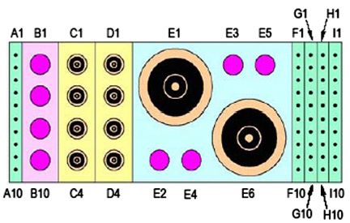

Operating Documentation
Direction 5440000, Rev# 5
Signa HDxt Service Methods
Module Version 1.0, Version Date 5/15/07
Operating Documentation |
| Required Persons | Procedure |
| 1 | 30 min |
The following tips can be used to troubleshoot common problems with the HDx 12CH Body Array Coil by GE (Dual Connector).
Digital Volt Meter
Phantoms Kit (P/N 2377425-3)
Some tests may require FRUs for diagnosis.
The HDx 1.5T 12CH Body Array Coil (Dual Connector) must be installed in the system.
GE_HDx BodyUA0
GE_HDx BodyUP1
GE_HDx BodyLA0
GE_HDx BodyLP1
GE_HDx BodyFA0
GE_HDx BodyFP1
GE_HdxBodyUpper2
GE_HdxBodyLower2
GE_HdxBodyFull2
GE_HdxBodyUserv2
GE_HdxBodyLserv2
GE_HdxBodyFserv2
Problem:
You are unable to pre-scan or are scanning and yet receiving no signal.
Possible Solution:
Verify the green lights above the port A AND B are illuminated. This indicates the coil is properly plugged into the system.
| NOTE: | Both connectors have to be plugged in al all times when using this coil. |
Verify that the system has correctly detected the coil by checking in the “Currently Connected” in the GUI to select coils in Rx as shown in the example in Illustration 1.
Illustration 1: “currently Connected” Coils Window In The Scan Screen

Verify that the scan locations and any FOV offsets are correct.
Perform a continuity check on the output cable (Section 4.4). The continuity check must be performed by a GE authorized Service Engineer.
Verify that the coil is positioned with the cable exiting towards the bore.
Verify that the cable is not looped or crossed.
There can also be a problem at the system interface port. Try swapping both the connectors in the A and B ports. If you still cannot get a signal, try to scan (transmit and receive) with the body coil. For this test, be sure to remove the imaging coil from the magnet bore before you scan with the body coil. If you still receive no signal the problem probably lies with the MR system. If the scan completes successfully, there is probably a problem with the coil. Contact GE for further assistance. If you are unable to scan with the substitute coil, there may be a system problem related to this particular coil type.
Problem:
Poor IQ, shaded images, or if SNR fails.
Possible Solution:
Perform a continuity check on the output cable (Section 4.4). The continuity check must be performed by a GE authorized Service Engineer.
Verify that there are no loops in the cables.
Verify that there are no metal or ferromagnetic objects close to the coil, patient or magnet (i.e., safety pin, hair pin).
Verify that the coil is properly positioned.
Verify that your center frequency is within the frequency adjustment range for your system.
Verify that the R1, R2 and TG values from the pre-scan are within normally expected ranges.
If you have not done so already, perform the coil Quality Assurance test (refer to Operator’s Manual ). If the values you obtain do not fall within normal operating parameters, investigate this further by performing a phantom scan with the body coil. For this test, be sure to remove the imaging coil from the magnet bore before you scan with the body coil. If you still have the same problems, there is probably an MR system problem. If the body coil scan is satisfactory, acquire a scan using another coil of the same type (receive-only, phased array) and . If the image quality is visibly improved, there may be a problem with the coil. Contact GE for further assistance.
Problem:
There is a black line or signal void on the image.
Possible Solution:
Verify that there is no metal present in the area being scanned in or on the patient.
Before removing the cable assembly from the coil, visually inspect all coaxial connectors and pins on the coil connector. Illustration 2 shows the pin layouts of the coil connector. The connector of the 1.5T Body Array Coil has 2 pins in column A and 5 pins in column M, four coaxial connectors in each of columns C, D, G and H. If there are any broken, deformed or recessed pins or coaxial connectors, replace the cable assembly.
| ||||
| Under no circumstances should the continuity of the center pin of the coax connectors be measured. They are extremely fragile when improper tools are used. | ||||
| NOTE: | There are two connectors in the dual connector coils. |
Illustration 2: Pin Layouts Of Hypertronics Connector

Step 1 – Remove the cable assembly from the coil.
Step 2 –Table 1 shows these pins and corresponding DC wires. Use a Digital Volt Meter (DVM) to check the resistance between the pin in the different columns and the corresponding DC wire (see Illustration 3). The resistance should be 0.2 ± 0.2 ohm. If any resistance reading is not within this range, perform Cable Replacement.
Table 1: Pins And Connected DC Wires
| Color | Pin |
| Brown/White | F1 |
| Orange | F2 |
| Yellow | F3 |
| Green | F4 |
| Blue | F5 |
| Violet | F6 |
| Red/Yellow | I3 |
| Black/Shield | I5 |
| Grey/White | I6 |
| Black(Cable) | I7 |
| Shorted Together | I8 |
| A1 to A2 | |
| F9 to F10 | |
| I9 to I10 |
Step 3 – Check if any pin in Table 1 is shorted to the ground. The outside conductor of a coaxial connector in column C, or D can be used as ground. If any pin is shorted to ground, perform Cable Replacement.
Illustration 3: Measure The Resistance Of The DC Line